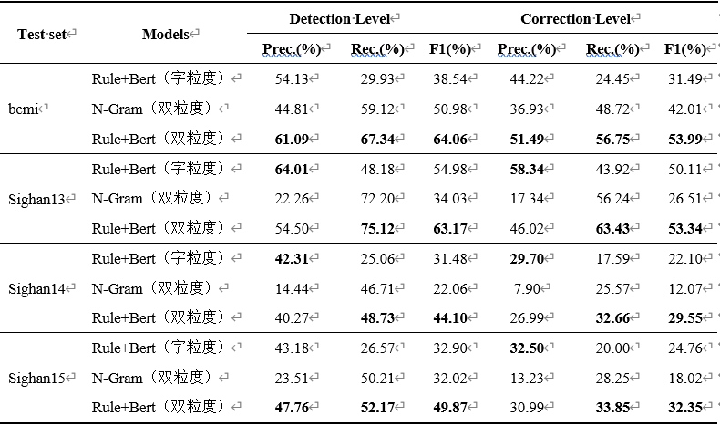

中文文本自动校对系统
中文文本自动校对系统是一个基于Bert与深度学习的中文校对系统，系统在不断尝试中，逐步提出了：
1、基于集成规则与Bert筛选的中文文本自动校对方法
2、基于多粒度融合与Bert筛选的中文文本自动校对方法
3、基于Bert与音形码的中文文本自动校对方法
系统提出的这三种文本校对方法性能逐步提高，在SIGHAN评测数据集中，其中基于Bert与音形码的中文文本自动校对方法较传统基于N-Gram LM方法综合性能提高近40%
系统可应用于语音识别（ASR）、文字识别（OCR）、数据质量评分等方面
基于集成规则与Bert筛选的中文文本自动校对方法
上下文信息更全面
传统基于N-Gram LM方法所获取的上下文信息始终受N的大小限制，而基于海量自然语言训练得到的Bert预训练模型能更好的理解上下文语境信息。
训练更方便
与监督学习不同，Bert模型的fine-tune训练无需大量的平行语料，无监督学习方法让模型训练更加方便。
校对结果更准确
Bert作为一个生成式模型，单独使用其往往会造成过纠现象，在此我们使用了音似形似字典为Bert纠错缩小范围，使结果更加准确
基于集成规则与Bert筛选的校对方法相关对比实验
基于多粒度融合与Bert筛选的中文文本自动校对方法
基于多粒度融合与Bert筛选的校对方法相关对比实验
检错召回率更高
词粒度级别校对模型采用了大规模常用词典作为知识库，对词错误召回率更高。
校对效果更全面
字粒度级别校对模型往往解决错字问题，倘若发生了词错误，仅仅依靠字粒度校对模型显然不够，双粒度融合校对模型能够校对更多错误。
校对准确率更高
多粒度融合校对模型对错词检测能力更强，然后使用音近形近字典纠错准确率更高
基于Bert与音形码的中文文本自动校对方法
Bert效果更好
此处Bert用于构建字的top5个候选集，并未用于筛选候选集，其充分利用了Bert对上下文语境的掌握度。
筛选候选集方法更灵活
放弃了传统使用音似、形似混淆集字典对候选集进行筛选，此处使用音形码方式对汉字间的相似度进行度量， 然后通过一个神经网络分类器用于过滤，其更加灵活
时间响应更快
对文本进行分段处理，并使用多线程技术对分段后的文本进行并行校对， 校对完成之后再拼接在一起返回结果，其响应时间更快
基于Bert与音形码的校对方法相关对比实验